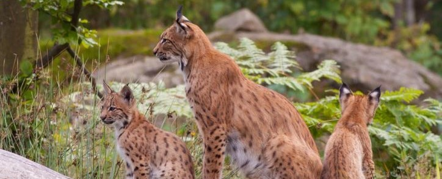

Reduced range
Of the four species of lynx that exist globally, two are found in Europe – the Eurasian lynx, and its cousin, the smaller, more brightly coloured Iberian lynx, which is now confined to southern Spain and Portugal. With a characteristically bobbed tail, spotted coat, long legs and a muscular body, these solitary, stealthy predators avoid humans and typically hunt at night, so they are rarely seen.
Bouncing back
Intentionally eradicated from many parts of Europe, the Eurasian lynx was considered extinct in nearly the whole of Central Europe for 200 years. Since the 1970s, however, it has been reintroduced to Switzerland, Slovenia, Croatia, France, Italy, the Czech Republic, Germany and Austria. Successful reintroduction into appropriate habitat relies strongly on acceptance by the general public. There are now thought to be around 9,000 to 10,000 Eurasian lynx in Europe.
Iberian success
Thanks to a captive breeding programme, the Iberian lynx has become one of European conservation’s greatest success stories, with numbers in the wild up from just 94 in 2002 to nearly 600 today. This increasing population, which extends across 1500 square kilometres, is recolonising new territory, with recent sightings in Toledo, Badajoz and Ciudad Real. Further Iberian lynx conservation action is still needed, involving ongoing efforts to recover prey populations (especially European rabbit), enhance habitat quality and connectivity (traffic accidents remain a big problem), and release lynx in new areas to connect populations.”
Rabbits and Iberian lynx
A specialist in both prey and habitat, the survival of the Iberian lynx is intimately tied to the survival of its main prey species: the European rabbit. Historically, wild rabbits were highly abundant on the Iberian peninsula. But two contagious viral diseases (particularly myxomatosis) have decimated the population. Whenever the rabbit population grows significantly, another virus strain strikes back and reduces the number of prey animals for the cats. Rabbit restocking programmes are now underway in many areas.
Keystone species
As top predators, both the Eurasian and Iberian lynx are keystone species, helping to maintain balanced, healhy populations of other animals. Like wolves, European bison and beavers, keystone species are widlife species that have a large impact on their community by controlling the dominance of other species, or by changing habitat structure. Both the Eurasian and Iberian lynx are of cultural importance too, and they are increasingly important for wildlife tourism.
“Every bit of plastic that’s ever been put into circulation is still in existence today,” says Melanie Croce, executive director at Seal Rescue Ireland. “It’s projected that by the year 2050, there will be more plastic in the ocean than fish.”
European Rewilding Network
In 2019, the European Rewilding Network welcomed the LIFE Lynx initiative, which is working to to enhance genetic diversity in the Eurasian lynx populations of Slovenia and Croatia by reintroducing 14 Eurasian lynx from Slovakia and Romania. It will also reintroduce further animals to improve connectivity between regional sub-populations. Five countries are involved (Italy, Croatia, Slovenia, Romania and Slovakia), as well as a diverse range of stakeholders, including local communities and hunters.
In May 2019, the first of the 14 lynx – two males from Romania – were translocated. “Doru” was released into the wild in Croatia’s Risnjak National Park, while “Goru” was released in the Slovenian municipality of Loški Potok. GPS collars will enable project researchers to track their movement and integration into the local lynx population.